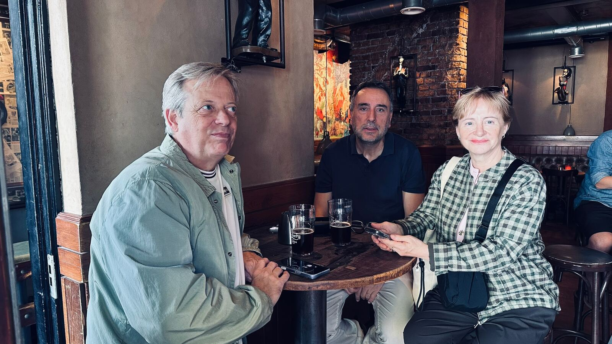
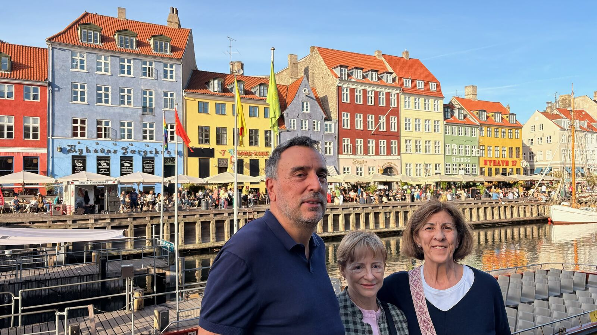
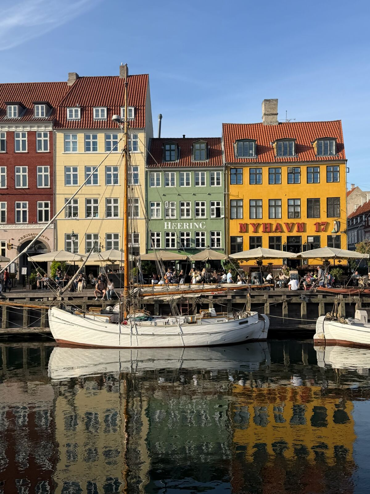
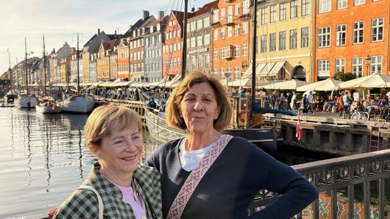

La ciudad que abre y cierra el viaje: primera noche nada más llegar, una vuelta después de ir a Malmö al día siguiente, y último día antes de coger el avión de regreso. Copenhague de aperitivo y de sobremesa.

Una cerveza bastó para decidir apuntarnos al viaje a Argentina, pero en business, of course.

Nyhavn, el canal de las casas de colores.

Nyhavn, tercera entrega, sin barco propio pero con photo call gratis.

Nyhavn otra vez, porque una foto nunca es suficiente.